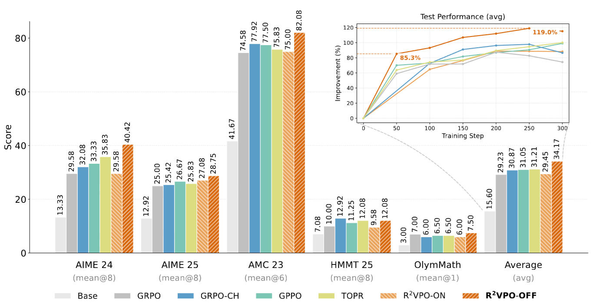
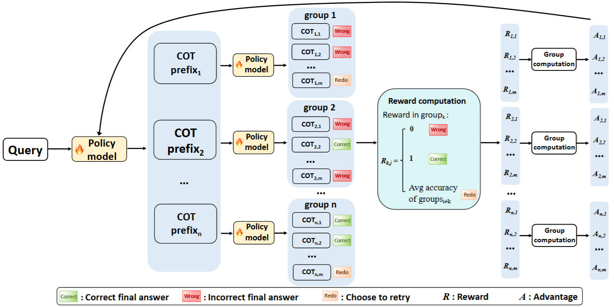
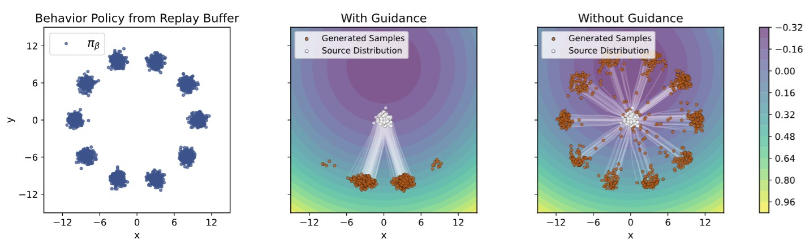
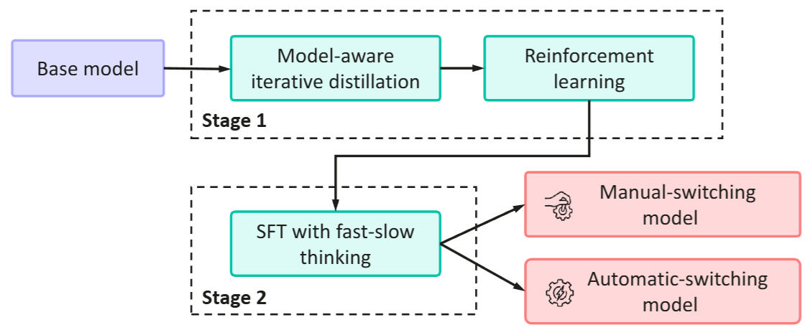
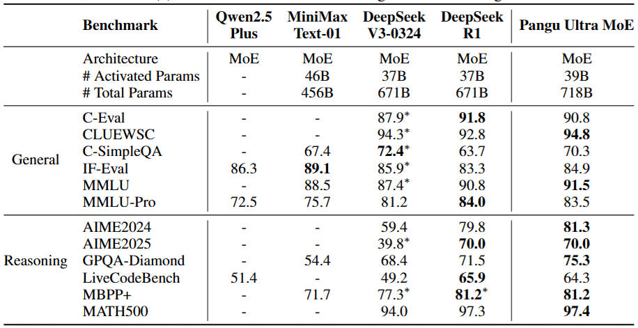
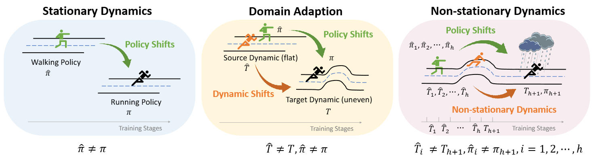
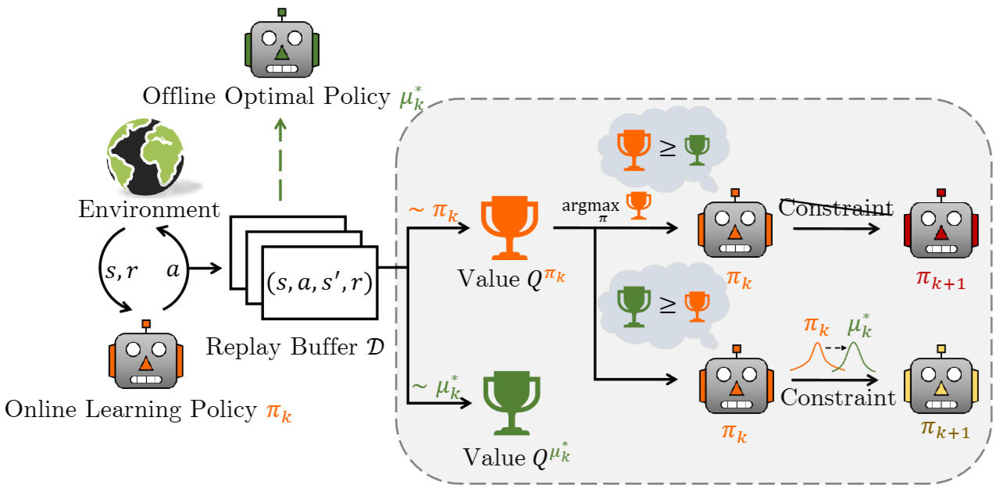
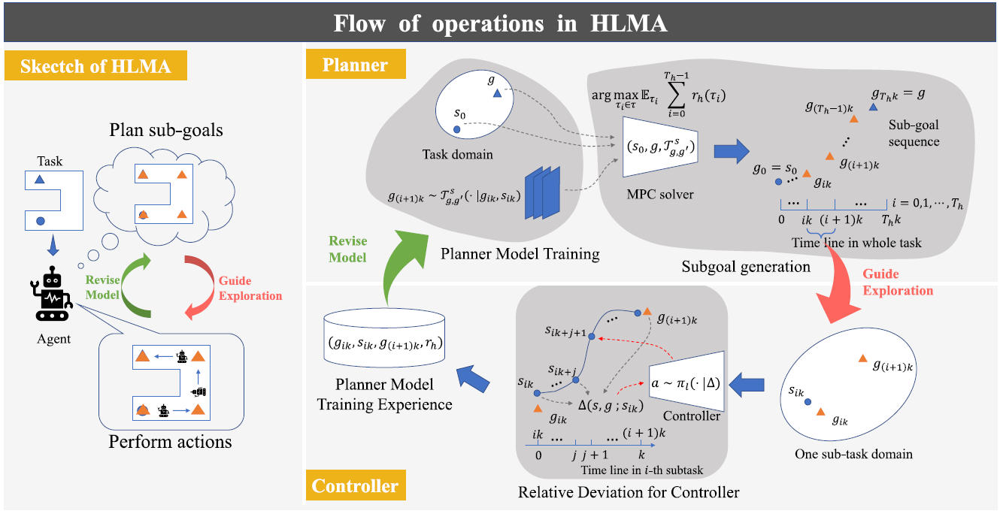
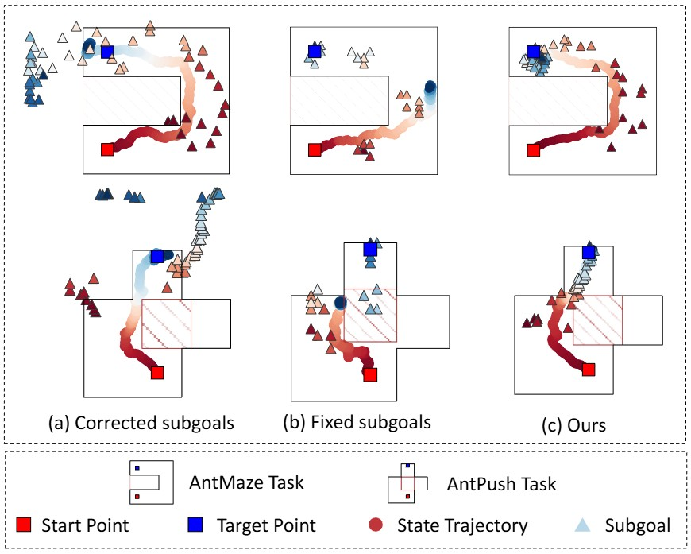
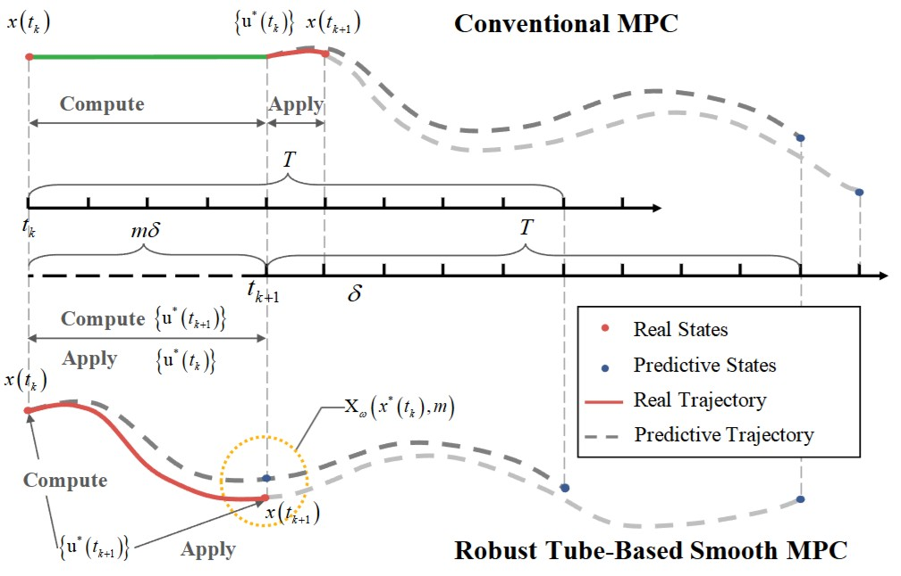

NSR
2026
01
About Me
I am a Co-founder and Head of Embodied Foundation Models at SEEN-E（深诣机器人技术有限公司）. I lead the end-to-end development of embodied foundation models, spanning data, model architecture, training, evaluation, and deployment.
My current focus is cross-task and cross-embodiment generalization for dual-arm manipulation and laboratory automation. Previously, I was a Senior Researcher in the Foundation Model Group at Huawei 2012 Labs, where I led reinforcement learning post-training for the openPangu model family.
I earned my Ph.D. in Computer Science and Technology from Tsinghua University in 2024, advised by Prof. Fuchun Sun. My research spans non-stationary reinforcement learning, LLM post-training, robotic decision-making, and Vision-Language-Action models.
Research Interests
Embodied Foundation Models
Building the full embodied-model stack across data, architecture, training, evaluation, and deployment.
Cross-task & Cross-embodiment Generalization
Developing transferable policies across tasks and robot embodiments, with closed-loop evaluation in dual-arm manipulation and laboratory automation.
Scalable RL Algorithms
Designing stable and data-efficient algorithms such as OMPO, OBAC, BrHPO, and R²VPO for non-stationary and large-scale policy optimization.
LLM Reasoning & Post-training
Improving mathematical and code reasoning through reinforcement learning, with an emphasis on stable optimization and efficient reuse of experience.
02
Experience
2026.05 - Present
Co-founder & Head of Embodied Foundation Models · 深诣机器人技术有限公司
(SEEN-E)
Leading the technical roadmap and end-to-end R&D of embodied foundation models.
- Own the full stack across data, model architecture, training, evaluation, and deployment.
- Develop cross-task and cross-embodiment generalization for dual-arm manipulation and laboratory automation, including robot closed-loop evaluation and deployment.
2025.01 - 2026.05
Senior Researcher · Huawei 2012 Labs (Foundation Model Group)
Led reinforcement learning post-training for the openPangu model family and developed
stable, data-efficient policy optimization methods for mathematical and code reasoning.
- Built the end-to-end workflow covering training infrastructure, algorithms, evaluation, and feedback-driven iteration.
- Proposed R²VPO to improve policy-update stability and experience reuse; contributed to Pangu Embedded and Pangu Ultra MoE.
2022 - 2023
Research Intern · Institute for AI Industry Research (AIR), Tsinghua
Conducted research on Hierarchical RL for dexterous robotic manipulation.
03
Selected Publications










04
Get in Touch
Interested in embodied AI, reinforcement learning, or research collaboration? I would be glad to hear from you.